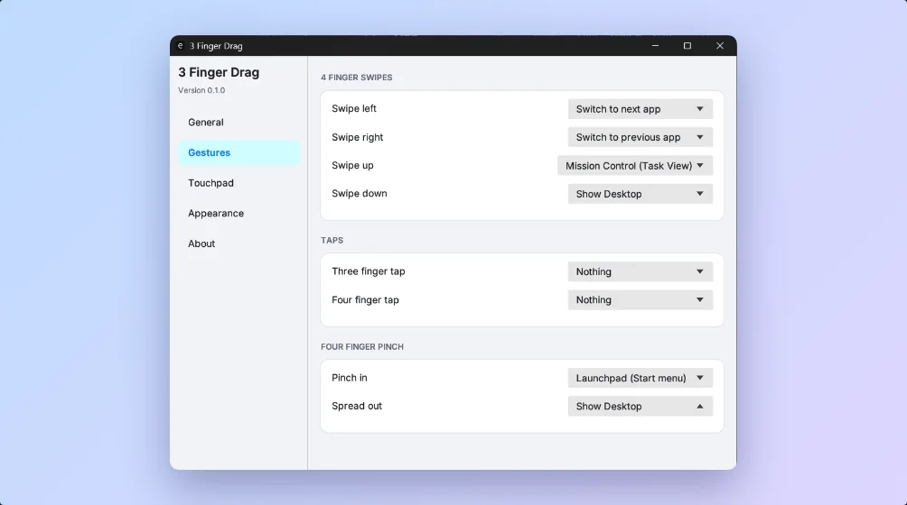
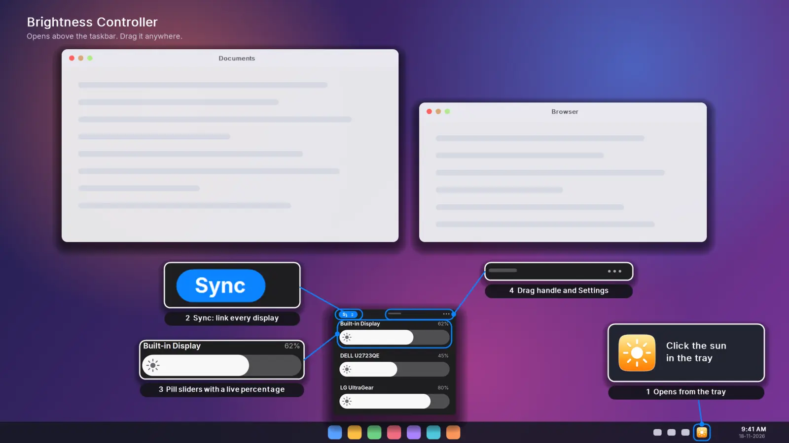

Windows
Windows 10 and 11

Windows

A Mac-style dock and menu bar for Windows 11.

Windows
Gallery for Windows
A fast, private photo gallery.

Windows
RustZip
A fast archive manager for ZIP, 7Z, RAR and more.

Windows

A Finder-style file manager with Quick Look and Smart Clean.

Windows

A light, fast media player for Windows.

Windows

Mac-style three finger drag for Windows touchpads.

Windows

One panel for every display's brightness.

Windows

Install iPhone apps from Windows.